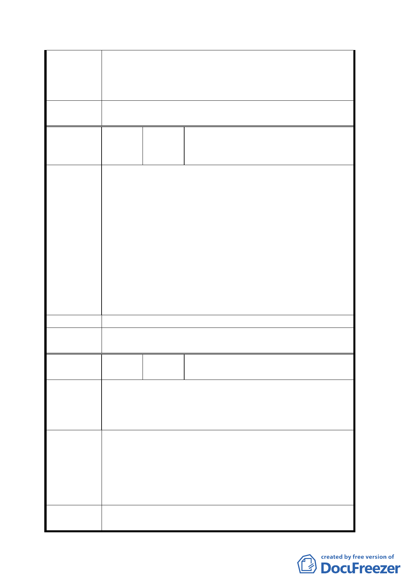

持原第四種商業區使用。
2、 計畫區其餘土地依計劃變更為廣場用地，並依
「都市計畫公共設施多目標使用方案」之規定
設置停車場及商店街。
委員會決
議
同決議一、二。
李冠霖、李冠志、魏琮和、魏琮坤、
編 號 ４ 陳情人 魏裕峰、魏裕忠、楊呂瓊玉、陳全
德、陳彥輝、呂嘉福
1、 貴陽街沿街商家係合法商家，建物有登記、有
權狀、有建照，並於本地居住營業逾半世紀，
現建物基地雖為國有財產局所轄，但我等有承
購之權利。
2、 理教公所原已列為都市更新地區，依法應由市
陳情理由
府開發主辦，今市府卸責、偷懶，不依法辦理
更新，反企圖變更為廣場用地，強渡關山，不
顧當地居民權益。
3、 地方與中央爭產，以民眾權益為芻狗，市政府
為無償奪取 35 億之土地，竟異想天開，將商
業區土地變更為廣場用地，嚴重侵害我當地居
民之合法權益。
建 議 辦 法 要都市更新，反對變更為廣場。
委員會決
議
同決議一、二。
編
號
５
陳情人
財團法人理教總公所台灣清心堂
公所
本公所現址原為日治時代西本願寺台灣別院舊址，
陳情理由
現存之表參道、廟基平台及台階具有百年之歷史、
為文化資財，備俱文化古蹟之保存意義。而理教為
我國之國教在台灣發展五十餘年也有其歷史價值。
若規劃為廣場用地，地上物設施希望能保留上述之
文化古蹟，設置規劃一理教文物紀念館，陳列理教
建議辦法
之史實，並作為台北市民活動及宗教聚會、參禪之
場所，由財團法人理教總公所台灣清心堂公所使用
並負維護之責，配合政府法令端正社會風氣及青少
年犯罪之防範。
委員會決 請市府將西本願寺遺蹟之歷史特色納入廣場規劃構
議 想，建議內容留供將來廣場規劃時參考。
八